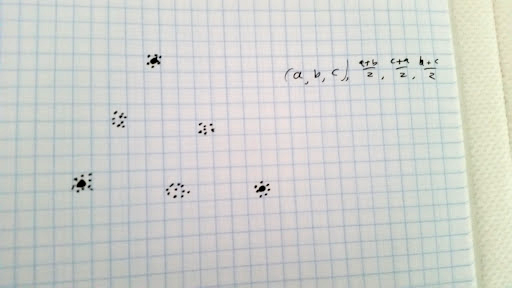

Doing $k$-means with intermediate points
The other day tom7 posed a little problem that seemed like a rather
natural mild generalization of $k$-means, which turned out to in fact have a
nice $k$-meansy sort of solution. Here's how it goes:
Suppose you have some data, and you know that it's structured as clusters, but the clusters
themselves have some structure. For example, maybe you know that has clusters
near three points $a$, $b$, and $c$,

but also has clusters near the midpoints of those centers, $(a+b)/2, (b+c)/2,$ and $(a+c)/2$.
That is, suppose you want to find the best $a, b, c$ such that the sum of squared distances
over all data points to their nearest 'center' (i.e. one of $a, b, c, (a+b)/2, (b+c)/2,$ and $(a+c)/2$) is minimized.
In general, suppose we're given $n$ are supposed to choose points $P_1, \ldots, P_n \in \R^d$.
We're also given $m$, the total number of 'centers' that we bucket datapoints into,
and for every $i \in 1\ldots n$ and $j \in 1\ldots m$, we get a $\lambda_{ij}$ which
is the coefficient in the linear sum that says how much influence the chosen point $P_i$
has on the $j^{th}$ center. For the example above, $n$ is $3$ and $m$ is $6$, and
the $\lambda$s go like
| $\lambda_{1j}$ | $\lambda_{2j}$ | $\lambda_{3j}$ |
| j=1 | 1 | 0 | 0 |
| j=2 | 0 | 1 | 0 |
| j=3 | 0 | 0 | 1 |
| j=4 | 1/2 | 1/2 | 0 |
| j=5 | 0 | 1/2 | 1/2 |
| j=6 | 1/2 | 0 | 1/2 |
If we're doing a $k$-means-like algorithm, then we'll alternate
- Assigning data points to the center that they're nearest to, and
- Finding the best place to move our $P_i$ to assuming the assignment of data points to centers from the previous step.
Since (1) is exactly the same as what $k$-means does, what I'm going to describe is deriving what
exactly we need to do in step (2).
Suppose for each center $j \in 1\ldots m$, we have $p_j$ data points assigned to it,
and that they're named $x_{jk}$ for $k \in 1\ldots p_j$. The error we want to minimize
is
\[ E = \sum_{j=1}^m\sum_{k = 1}^{p_j} \left|\left|x_{jk}-\sum_{i=1}^n P_i\lambda_{ij}\right|\right|^2 \]
\[ = \sum_{j=1}^m\sum_{k = 1}^{p_j} \sum_{\ell = 1}^d \left(x_{jk\ell}-\sum_{i=1}^n P_{i\ell}\lambda_{ij}\right)^2 \]
To minimize, we set to zero all
the partial derivatives with respect to things we have any control over, namely
all the coordinates of the points $P_i$.
\[ \forall \bar i, \bar\ell: \qquad 0 = {\partial E \over \partial P_{\bar i\bar\ell}} \]
\[ = {\partial \over \partial P_{\bar i\bar\ell}} \sum_{j=1}^m\sum_{k = 1}^{p_j} \sum_{\ell = 1}^d \left(x_{jk\ell}-\sum_{i=1}^n P_{i\ell}\lambda_{ij}\right)^2 \]
\[ = \sum_{j=1}^m\sum_{k = 1}^{p_j} \sum_{\ell = 1}^d 2 \left(x_{jk\ell}-\sum_{i=1}^n P_{i\ell}\lambda_{ij}\right) {\partial \over \partial P_{\bar i\bar\ell}} \left(x_{jk\ell}-\sum_{i=1}^n P_{i\ell}\lambda_{ij}\right) \]
\[ = -2 \sum_{j=1}^m\sum_{k = 1}^{p_j} \left(x_{jk\bar\ell}-\sum_{i=1}^n P_{i\bar\ell}\lambda_{ij}\right) \lambda_{\bar i j} \]
hence
\[ 0 = \sum_{j=1}^m\sum_{k = 1}^{p_j} \left(\lambda_{\bar i j}x_{jk\bar\ell}-\lambda_{\bar i j}\sum_{i=1}^n P_{i\bar\ell}\lambda_{ij}\right) \]
\[ \sum_{j=1}^m\sum_{k = 1}^{p_j} \lambda_{\bar i j}\sum_{i=1}^n P_{i\bar\ell}\lambda_{ij} = \sum_{j=1}^m\sum_{k = 1}^{p_j} \lambda_{\bar i j}x_{jk\bar\ell} \]
\[ \sum_{j=1}^m{p_j} \lambda_{\bar i j}\sum_{i=1}^n P_{i\bar\ell}\lambda_{ij} = \sum_{j=1}^m\sum_{k = 1}^{p_j} \lambda_{\bar i j}x_{jk\bar\ell} \]
\[ \sum_{i=1}^n P_{i\bar\ell}\sum_{j=1}^m{p_j} \lambda_{\bar i j}\lambda_{ij} = \sum_{j=1}^m\sum_{k = 1}^{p_j} \lambda_{\bar i j}x_{jk\bar\ell} \]
And if we set $M_{\bar i i} = \sum_{j=1}^m{p_j} \lambda_{\bar i j}\lambda_{ij}$
and $w_{\bar i} = \sum_{j=1}^m\sum_{k = 1}^{p_j} \lambda_{\bar i j}x_{jk\bar\ell}$
and $v_{i} = P_{i\bar\ell}$, then we're really demanding
that
\[ M v = w\]
so we can of course just solve for $v$ by inverting $M$:
\[ v = M^{-1} w\]